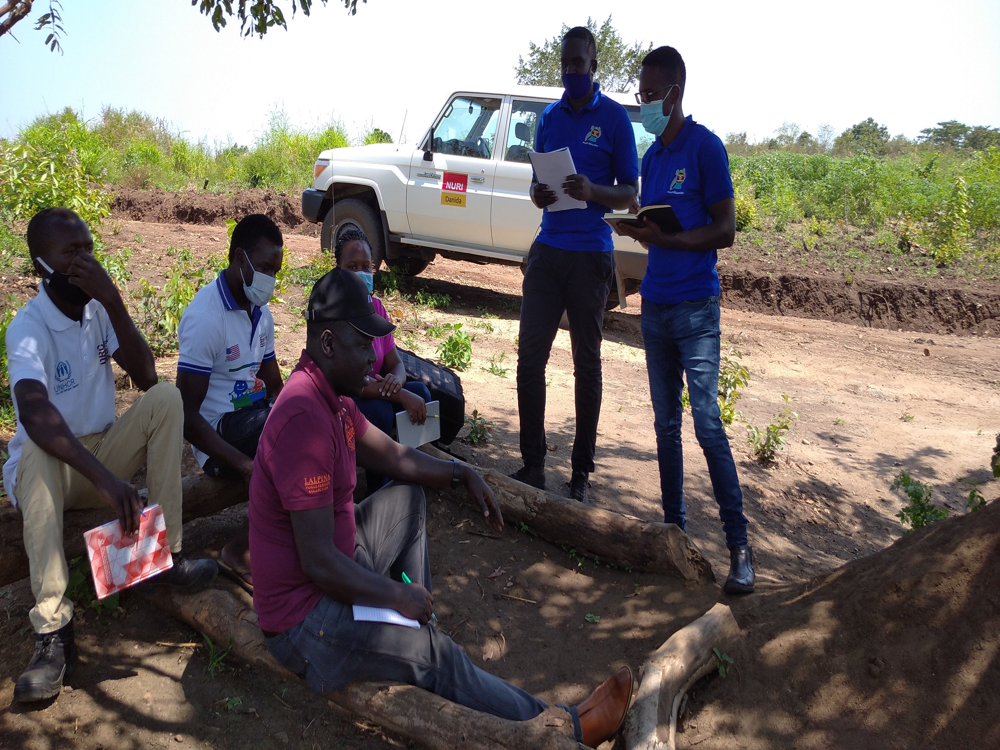

What do we do?
OpenStreetMap Uganda is a registered NGO working in and out of Kampala, across Uganda, and promotes community mapping, generates map awareness, actively pledges open data sets and builds a network of enthusiastic mappers in Uganda.
All activities are set up around the global OpenStreetMap (OSM) project. OpenStreetMap is built by a community of mappers that contribute and maintain data about roads, trails, cafés, railway stations, and much more, all over the world. OpenStreetMap emphasizes local knowledge. Contributors use aerial imagery, GPS devices, and low-tech field maps to verify that OSM is accurate and up to date.
For more information about OpenStreetMap, follow this link.
We work With Youth Mappers
At OSM we work with the Uganda Youth mappers who are mostly university students who intern with the Humanitarian OpenStreetMap Team(HOT). The youth mappers get the opportunity to learn about OpenStreetMap and mobile data collection techniques through the different projects and activities carried out by the HOT team. They get to lead teams of other university students to collect the data, clean it up and upload it to the OpenStreetMap. For more info about the youth mappers go to Link.
The youth mappers are currently working on the rapid response project. The youth Mappers and the rapid response team hope to execute this project while indoors due to the current lockdown situation. They hope to execute this project for a period of four months by: mapping about 40 tasks using the HOT tasking manager. This will be done with the different youth chapters, OSM community members and the HOT team.... More about Rapid Response
Activities at OpenStreetMap Uganda
At OpenStreetMap Uganda we carry out many activities and these include trainings and projects which are aimed at benefiting the community. A number of projects and trainings have been carried out at and By OpenStreetMap Uganda and the other stakeholders. Click on the links below to find out more about our training services and Projects.
-
 See more..
See more..Projects
At OpenStreetMap Uganda many projects have been implemented and many more are yet to be carried, to look at some of the projects we have carried out in conjuction with our partners and all the stakeholders, click on the link below to find find out more...
-
See more..
training Services
We have had a series of GIS pieces of training which included participants from Somalia and South Sudan. Want to be part of our training, check out more about our services here.
Give your bit, help the community, Donate a little.
Partners and Supporters


Connect with us
Our Address:
Plot 90, Kanjokya House
4th Floor, Hive Colab
Kanjokya Street, Kamwokya
Kampala, Uganda